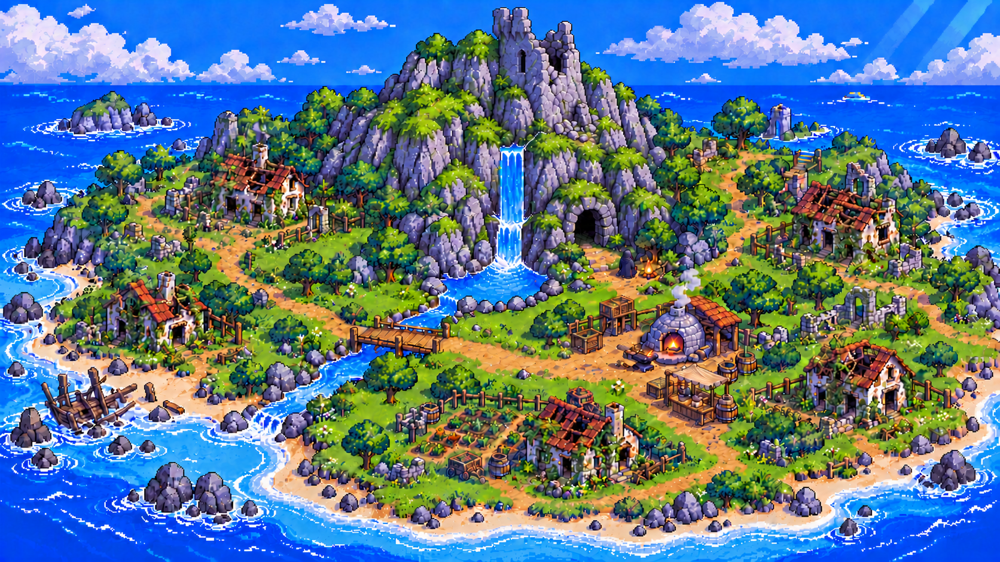
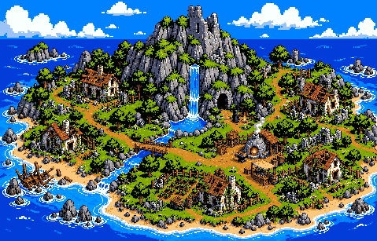
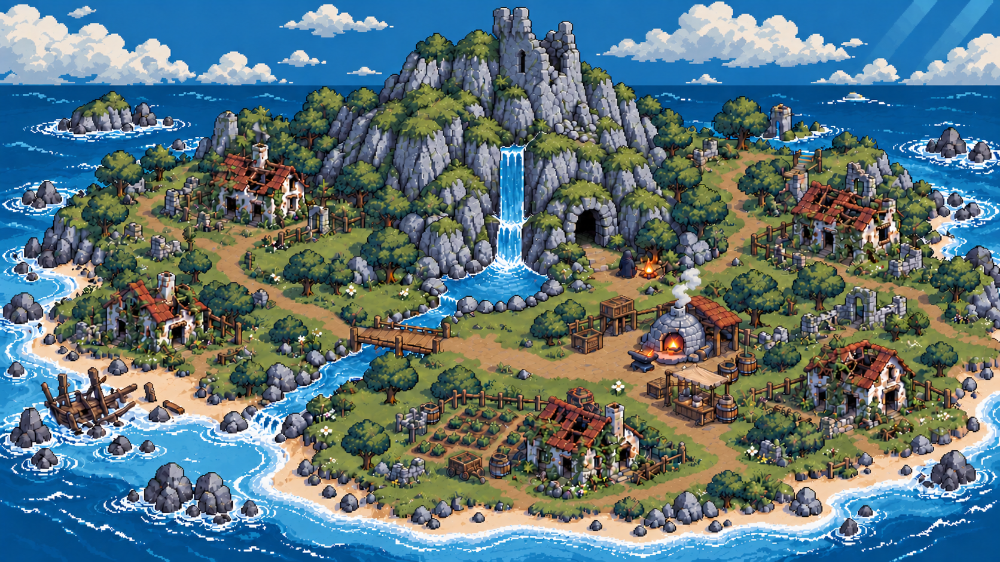
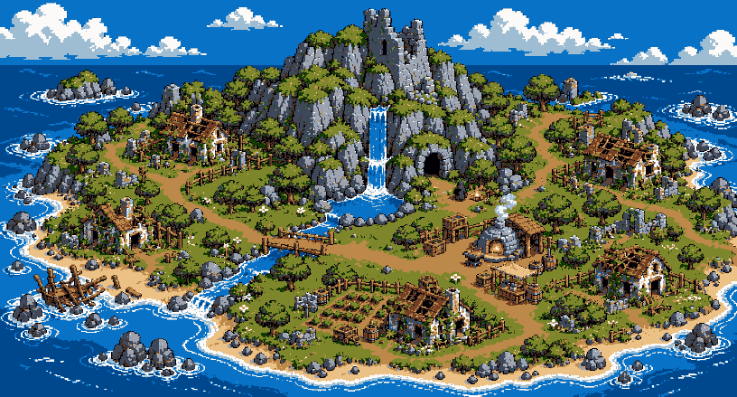

Вариант A
Яркая


Хаб · локальная галерея
Сравнение двух перерисовок и просмотр анимационных проб. Это исследовательские материалы; в игру они не внедрены.
01 · Перерисовка




02 · Анимация
Все пять проб выбранной группы проигрываются одновременно. Названия описывают задание; результат может отличаться. В карточках есть исходники и все кадры.